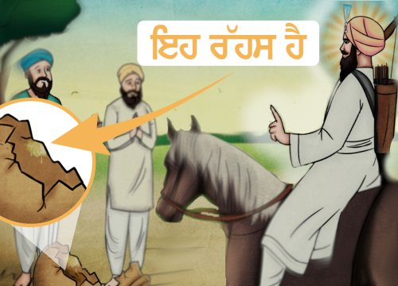

A Story of Forgiveness and Humility

Guru Har Rai Ji, the seventh Guru of the Sikhs, was known for his deep compassion and gentle nature. Even as a young boy, he was kind and full of love for all living beings.
One day, while walking through the Guru’s garden, a sevadar (helper) accidentally knocked over a gharra (clay pot) filled with water. It fell and broke. Scared and ashamed, the sevadar expected to be punished.
Instead of getting angry, Guru Har Rai Ji picked up the broken pieces gently and said, “Just like this gharra, when hearts are broken, we must handle them with care.”
He smiled and forgave the sevadar, showing that kindness is stronger than punishment.
Guru Ji’s act became a powerful lesson for everyone – to choose forgiveness over anger, and to always act with love, even when mistakes happen.
“Guru Har Rai Ji showed us that a compassionate heart can fix what anger cannot.”